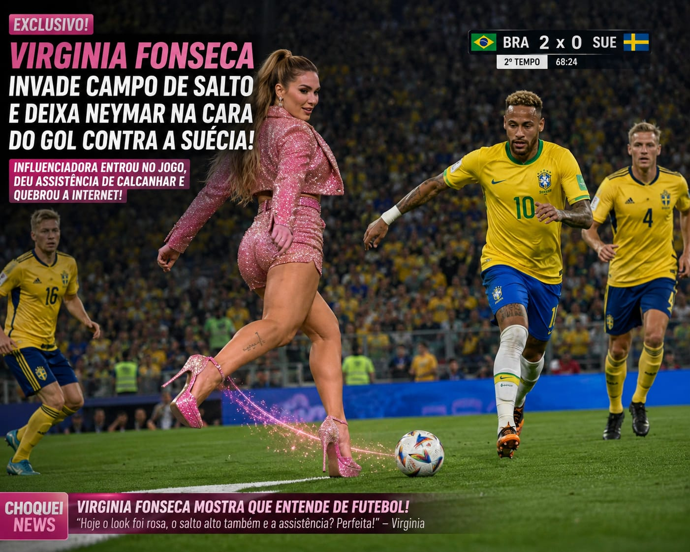

Virgínia entra em campo
Por: Alice
No jogo final da copa do mundo entre Brasil e Suécia, Virginia Fonseca invade campo nos ultimos dez minutos de jogo, servindo uma assistência para Neymar que resultou na vitória e conquista do Hexa para o Brasil. Ela estava calçando um salto alto rosa com glitter, anunciando um novo lançamento da Wepink.